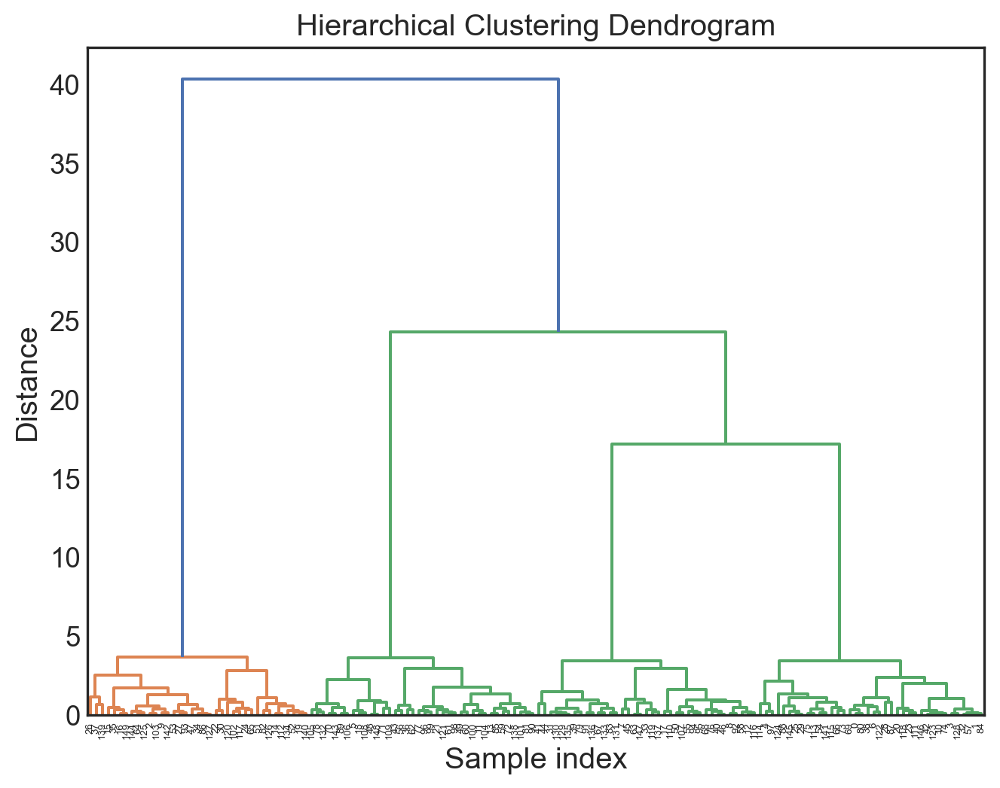
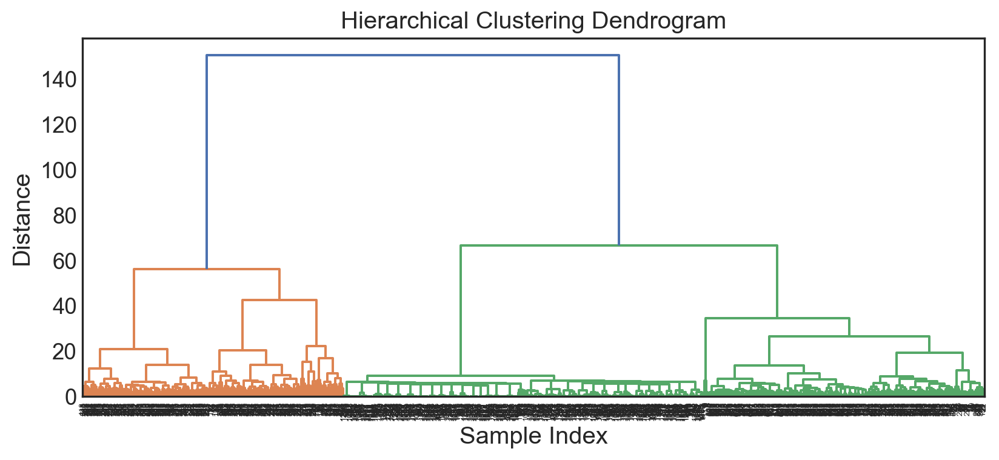
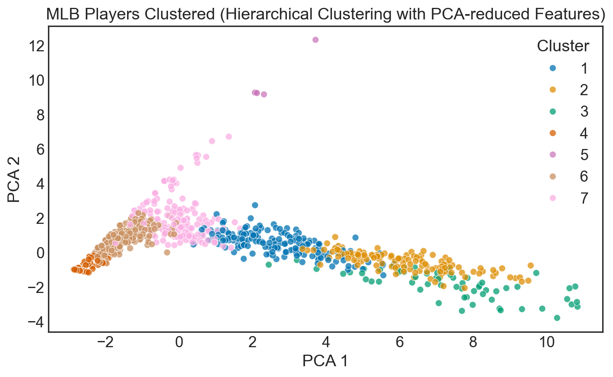
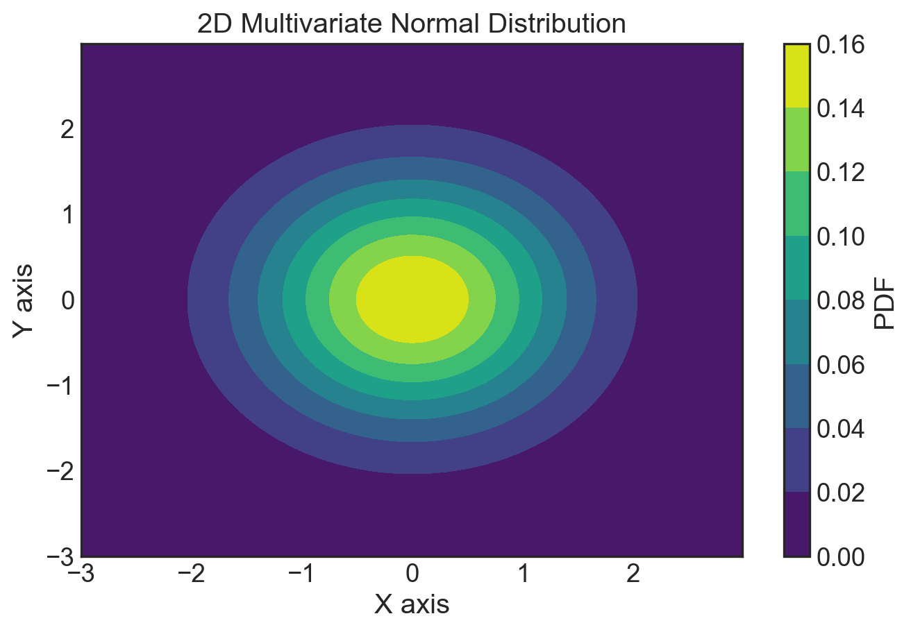
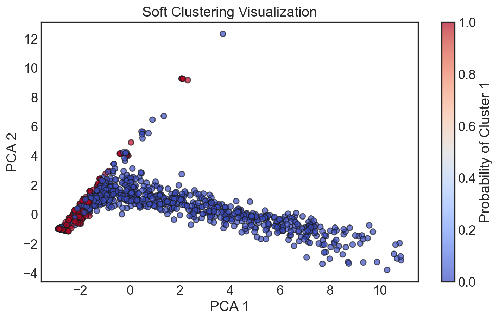

# Data Handling and Manipulation
import pandas as pd
import numpy as np
# Data Preprocessing
from sklearn.preprocessing import StandardScaler, OneHotEncoder
from sklearn.compose import ColumnTransformer
from sklearn.pipeline import Pipeline
from sklearn.impute import SimpleImputer
from sklearn.decomposition import PCA
# Model Selection and Evaluation
from sklearn.model_selection import train_test_split, GridSearchCV, RandomizedSearchCV
from sklearn.metrics import silhouette_score, davies_bouldin_score, calinski_harabasz_score
from sklearn.mixture import GaussianMixture
# Machine Learning Models
from sklearn.cluster import KMeans
from sklearn_extra.cluster import KMedoids
from scipy.cluster.hierarchy import dendrogram, linkage
from scipy.cluster.hierarchy import fcluster
from sklearn.neighbors import NearestNeighbors
from sklearn.cluster import DBSCAN
# Data Visualization
import matplotlib.pyplot as plt
import seaborn as sns
# Set the default style for visualization
sns.set_theme(style = "white", palette = "colorblind")
# Increase font size of all Seaborn plot elements
sns.set(font_scale = 1.25)Unsupervised
Learning II
Lecture 12
John Chen
University of Arizona
INFO 523 - Fall 2025
Warm up
Announcements
- HW 05 is due Fri Apr 26, 11:59pm
- RQ 05 is due Wed May 01, 11:59pm
- Final Project Presentations are Mon May 06, 1pm
Setup
From last time: question
Can we identify distinct baseball player groupings based on their player stats in 2018?
Our data: MLB player stats
mlb_players_18 = pd.read_csv("data/mlb_players_18.csv", encoding = 'iso-8859-1')
mlb_players_18.head()| name | team | position | games | AB | R | H | doubles | triples | HR | RBI | walks | strike_outs | stolen_bases | caught_stealing_base | AVG | OBP | SLG | OPS | |
|---|---|---|---|---|---|---|---|---|---|---|---|---|---|---|---|---|---|---|---|
| 0 | Allard, K | ATL | P | 3 | 1 | 1 | 1 | 0 | 0 | 0 | 0 | 0 | 0 | 0 | 0 | 1.0 | 1.0 | 1.0 | 2.0 |
| 1 | Gibson, K | MIN | P | 1 | 2 | 2 | 2 | 0 | 0 | 0 | 0 | 0 | 0 | 0 | 0 | 1.0 | 1.0 | 1.0 | 2.0 |
| 2 | Law, D | SF | P | 7 | 1 | 1 | 1 | 0 | 0 | 0 | 0 | 0 | 0 | 0 | 0 | 1.0 | 1.0 | 1.0 | 2.0 |
| 3 | Nuno, V | TB | P | 1 | 2 | 0 | 2 | 0 | 0 | 0 | 1 | 0 | 0 | 0 | 0 | 1.0 | 1.0 | 1.0 | 2.0 |
| 4 | Romero, E | KC | P | 4 | 1 | 1 | 1 | 1 | 0 | 0 | 0 | 0 | 0 | 0 | 0 | 1.0 | 1.0 | 2.0 | 3.0 |
# Handling missing values: Impute missing values if any
# For numerical features, replace missing values with the median of the column
# For categorical features, replace missing values with the most frequent value of the column
numerical_transformer = Pipeline(steps = [
('imputer', SimpleImputer(strategy = 'median')),
('scaler', StandardScaler())])
categorical_transformer = Pipeline(steps = [
('onehot', OneHotEncoder(handle_unknown = 'ignore'))])
preprocessor = ColumnTransformer(transformers = [
('num', numerical_transformer, numerical_features),
('cat', categorical_transformer, categorical_features)])# Apply the transformations to the dataset
mlb_preprocessed = preprocessor.fit_transform(mlb_players_18)
# The result is a NumPy array. To convert it back to a DataFrame:
# Update the method to get_feature_names_out for compatibility with newer versions of scikit-learn
feature_names = list(preprocessor.named_transformers_['cat'].named_steps['onehot'].get_feature_names_out(categorical_features))
new_columns = numerical_features + feature_names
mlb_preprocessed_df = pd.DataFrame(mlb_preprocessed, columns = new_columns)
mlb_preprocessed_df.head()| games | AB | R | H | doubles | triples | HR | RBI | walks | strike_outs | ... | position_1B | position_2B | position_3B | position_C | position_CF | position_DH | position_LF | position_P | position_RF | position_SS | |
|---|---|---|---|---|---|---|---|---|---|---|---|---|---|---|---|---|---|---|---|---|---|
| 0 | -0.904553 | -0.695768 | -0.596283 | -0.633846 | -0.620712 | -0.439676 | -0.547399 | -0.622245 | -0.59747 | -0.726364 | ... | 0.0 | 0.0 | 0.0 | 0.0 | 0.0 | 0.0 | 0.0 | 1.0 | 0.0 | 0.0 |
| 1 | -0.944603 | -0.690386 | -0.559089 | -0.613594 | -0.620712 | -0.439676 | -0.547399 | -0.622245 | -0.59747 | -0.726364 | ... | 0.0 | 0.0 | 0.0 | 0.0 | 0.0 | 0.0 | 0.0 | 1.0 | 0.0 | 0.0 |
| 2 | -0.824454 | -0.695768 | -0.596283 | -0.633846 | -0.620712 | -0.439676 | -0.547399 | -0.622245 | -0.59747 | -0.726364 | ... | 0.0 | 0.0 | 0.0 | 0.0 | 0.0 | 0.0 | 0.0 | 1.0 | 0.0 | 0.0 |
| 3 | -0.944603 | -0.690386 | -0.633478 | -0.613594 | -0.620712 | -0.439676 | -0.547399 | -0.583894 | -0.59747 | -0.726364 | ... | 0.0 | 0.0 | 0.0 | 0.0 | 0.0 | 0.0 | 0.0 | 1.0 | 0.0 | 0.0 |
| 4 | -0.884529 | -0.695768 | -0.596283 | -0.633846 | -0.525322 | -0.439676 | -0.547399 | -0.622245 | -0.59747 | -0.726364 | ... | 0.0 | 0.0 | 0.0 | 0.0 | 0.0 | 0.0 | 0.0 | 1.0 | 0.0 | 0.0 |
5 rows × 56 columns
Clustering cont.
Clustering methods
Hierarchical Clustering

Initialization: Each data point starts as its own cluster (\(N\) data points → \(N\) clusters).
Find the Closest Pair of Clusters: Use a distance metric to identify the closest clusters, with options including:
Single Linkage: Distance between the nearest points in two clusters.
Complete Linkage: Distance between the farthest points in two clusters.
Average Linkage: Average distance between all point pairs across two clusters.
Ward’s Method: Minimizes the increase in total within-cluster variance after merging.
Merge Clusters: The two nearest clusters are merged into one.
Update Distances: Recalculate distances between the new cluster and existing clusters.
Repeat: Continue merging the nearest clusters until reaching a single cluster or a desired number of clusters.
Result: Visualized as a dendrogram showing merge sequences and distances.
Initialization: Begins with each data point as a separate cluster.
Linkage Criteria: Uses metrics like minimum, maximum, average distance, or Ward’s method to measure cluster distances.
Merging Step: Merges the closest clusters at each step based on the linkage criteria.
Termination: Ends when all points are in a single cluster or a stop condition is reached.
Objective: Builds a cluster hierarchy reflective of data structure, not minimizing a specific criterion.
Optimal Clusters: Chosen by analyzing the dendrogram, without a predefined number.
Sensitivity: Influenced by linkage method and outliers.
Efficiency: More computationally intensive than k-means, suitable for detailed hierarchical analysis.
Hierarchical clustering: applied
Code
# Apply hierarchical clustering
Z = linkage(mlb_preprocessed, 'ward')
# Plotting the dendrogram for visual inspection
plt.figure(figsize = (10, 4))
dendrogram(Z)
plt.title('Hierarchical Clustering Dendrogram')
plt.xlabel('Sample Index')
plt.ylabel('Distance')
plt.show()
# To cut the dendrogram at a determined number of clusters and evaluate performance
max_d = 25 # for example, distance cutoff to define number of clusters
clusters_hc = fcluster(Z, max_d, criterion = 'distance')
# Evaluate clustering performance (example using silhouette score)
silhouette_avg_hc = silhouette_score(mlb_preprocessed, clusters_hc)
print(f"The average silhouette_score for hierarchical clustering is : {silhouette_avg_hc:.3f}")
The average silhouette_score for hierarchical clustering is : 0.261Code
# PCA for dimensionality reduction
pca = PCA(n_components = 2)
mlb_pca = pca.fit_transform(mlb_preprocessed)
# Visualize the clusters
plt.figure(figsize = (9, 5))
sns.scatterplot(x = mlb_pca[:, 0], y = mlb_pca[:, 1], hue = clusters_hc, alpha = 0.75, palette = "colorblind")
plt.title('MLB Players Clustered (Hierarchical Clustering with PCA-reduced Features)')
plt.xlabel('PCA 1')
plt.ylabel('PCA 2')
plt.legend(title = 'Cluster')
plt.show()
DBSCAN
Density-Based Spatial Clustering of Applications with Noise

DBSCAN (Density-Based Spatial Clustering of Applications with Noise) is a clustering algorithm with the following key points:
- Density-Based: Identifies clusters based on the density of data points, effectively handling clusters of various shapes and sizes.
- Noise Sensitivity: Capable of distinguishing noise (outlier points) from clusters, enhancing its robustness to outliers.
- Parameters: Primarily governed by
eps(the maximum distance between two points for them to be considered as in the same neighborhood) andmin_samples(the minimum number of points to form a dense region). - No Need for Cluster Count: Unlike K-means, DBSCAN does not require the number of clusters to be specified in advance.
- Versatility: Works well on datasets with complex structures and varying densities.
DBSCAN: applied
Code
# Selecting relevant features for clustering
features = mlb_players_18[['AVG', 'OBP', 'SLG', 'OPS']]
# Scaling the features
scaler = StandardScaler()
X_scaled = scaler.fit_transform(features)
# Finding an optimal eps value using the nearest neighbors
neighbors = NearestNeighbors(n_neighbors=4)
neighbors_fit = neighbors.fit(X_scaled)
distances, indices = neighbors_fit.kneighbors(X_scaled)
distances = np.sort(distances, axis=0)
distances = distances[:,1]
plt.figure(figsize = (9, 5))
plt.plot(distances)
plt.title('K-Nearest Neighbors: Finding Optimal Epsilon')
plt.xlabel('Points sorted by distance')
plt.ylabel('Epsilon distance')
plt.show()# Based on the elbow method from the plot, let's pick an eps value and apply DBSCAN
eps_value = 0.5 # This value should be adjusted based on the elbow point observed in the plot
dbscan = DBSCAN(eps = eps_value, min_samples = 5)
clusters_dbscan = dbscan.fit_predict(X_scaled)
# Evaluate clustering performance using silhouette score
silhouette_avg_dbscan = silhouette_score(X_scaled, clusters_dbscan)
print(f"The average silhouette_score for DBSCAN is : {silhouette_avg_dbscan:.3f}")The average silhouette_score for DBSCAN is : 0.060Code
# PCA for dimensionality reduction
pca = PCA(n_components = 2)
X_pca = pca.fit_transform(X_scaled)
# Visualize the clusters
plt.figure(figsize = (9, 5))
sns.scatterplot(x = X_pca[:, 0], y = X_pca[:, 1], hue = clusters_dbscan, palette = "colorblind", alpha = 0.75, legend = "full")
plt.title('DBSCAN Clustering of MLB Players with PCA-reduced Features')
plt.xlabel('PCA 1')
plt.ylabel('PCA 2')
plt.legend(title = 'Cluster')
plt.show()Model-based clustering
Hierarchical vs. Model-based clustering
Definition: Builds clusters by either successively merging or splitting data points, represented as a tree or dendrogram.
Approach: Does not assume a specific number of clusters a priori. Clusters are formed based on a distance metric and linkage criterion (e.g., single, complete, average linkage).
Flexibility: Can reveal data structure at different levels of granularity, from many small clusters to a few large ones.
Scalability: Computationally intensive for large datasets due to the need to compute and update distances between all cluster pairs.
Interpretability: The dendrogram provides a visual representation of the data hierarchy, making it intuitive to understand cluster relationships.
Use Cases: Effective for exploratory data analysis, identifying hierarchical structure in data, and datasets where the number of clusters is not known beforehand.
Definition: Assumes data is generated from a mixture of several probabilistic models, typically Gaussian distributions, each representing a cluster.
Approach: Optimizes the fit between data and model, often using Expectation-Maximization (EM) algorithm to estimate model parameters.
Flexibility: Can accommodate clusters of different shapes, sizes, and densities due to its probabilistic foundation.
Scalability: Tends to require more computational resources, especially as the number of dimensions (features) increases.
Interpretability: Provides statistical measures for model selection (e.g., BIC) and can infer the probability of membership for each data point in each cluster.
Use Cases: Well-suited for complex datasets where clusters may overlap or have non-spherical shapes.
Model Assumptions: Model-based clustering requires data to fit statistical distributions; hierarchical does not.
Output: Hierarchical clustering produces a dendrogram showing data hierarchy; model-based identifies a fixed number of clusters.
Scalability: Model-based clustering is computationally intensive due to model fitting; hierarchical clustering’s main demand is in distance computation.
Flexibility and Interpretability: Hierarchical offers granularity and intuitive dendrograms; model-based allows diverse cluster shapes but requires understanding of probabilistic models.
Multivariate normal distribution

The formula for the probability density function (PDF) of the multivariate normal (Gaussian) distribution for a \(d\)-dimensional random vector \(X = [X_1, X_2,…,X_d]^T\) with mean vector \(\mu = [\mu_1, \mu_2,…,\mu_d]^T\) and covariance \(\Sigma\) (a \(d \times d\) positive definite matrix) is given by:
\(f(x; \mu, \Sigma) = \frac{1}{(2\pi)^{d/2}|\Sigma|^{1/2}} \exp\left( -\frac{1}{2}(x-\mu)^T\Sigma^{-1}(x-\mu) \right)\)
Where:
\(x\) is a realization of the random vector \(X\)
\(|\Sigma|\) denotes the determinant of \(\Sigma\)
\(\Sigma^{-1}\) is the inverse of \(\Sigma\)
\(T\) denotes the transpose of a vector
Soft clustering and mixtures of normals
Soft Clustering: Allows data points to belong to multiple clusters with varying degrees of membership, expressed probabilistically.
Gaussian Mixture Models (GMMs): Assume data originates from a mix of several Gaussian distributions, each representing a cluster.
Probabilistic Membership: Provides probabilities for each data point’s membership in different clusters, rather than assigning them to a single cluster.
Parameters and Estimation: Utilizes means, covariances, and mixing coefficients to characterize clusters, estimated via the Expectation-Maximization algorithm.
Versatility: Effective for datasets with overlapping clusters or varying cluster shapes and sizes.
Applications: Useful in fields like image processing and bioinformatics, where the nuanced understanding of data structure is crucial.
Soft clustering: applied
Code
# Fit a Gaussian Mixture Model
gmm = GaussianMixture(n_components = 3, covariance_type = 'full', random_state = 0)
gmm.fit(mlb_preprocessed)
# Predict soft assignments
probs = gmm.predict_proba(mlb_preprocessed)
# Assign each data point to the cluster with the highest probability
hard_assignments = np.argmax(probs, axis=1)
# Calculate the silhouette score using these hard assignments
silhouette_avg = silhouette_score(mlb_preprocessed, hard_assignments)
print(f"The average silhouette score for the GMM clustering is: {silhouette_avg:.3f}")
# BIC
bic_score = gmm.bic(mlb_preprocessed)
print(f"BIC Score: {bic_score:.3f}")
# Convergence
print(f"Converged: {gmm.converged_}")
# Number of iterations
print(f"Number of iterations: {gmm.n_iter_}")
# Cluster weights
print(f"Cluster Weights: {gmm.weights_}")The average silhouette score for the GMM clustering is: 0.319
BIC Score: -142996.239
Converged: True
Number of iterations: 10
Cluster Weights: [0.48346465 0.24021972 0.27631563]Code
pca = PCA(n_components = 2)
mlb_pca = pca.fit_transform(mlb_preprocessed)
# Choose a cluster to visualize its probability distribution
plt.figure(figsize = (9, 5))
plt.scatter(mlb_pca[:, 0], mlb_pca[:, 1], c = probs[:, 0], cmap = 'coolwarm', edgecolor = 'k', alpha = 0.7)
plt.colorbar(label = 'Probability of Cluster 1')
plt.title('Soft Clustering Visualization')
plt.xlabel('PCA 1')
plt.ylabel('PCA 2')
plt.show()
Conclusions
Identifying Baseball Player Groupings:
Methods:
Hierarchical clustering (group by similarity)
K-means clustering (fixed number of groups)
Model-based clustering (fit statistical models)
Interpretation: Analyze clusters for shared player characteristics (e.g., home run hitters, stolen base specialists).
Considerations:
Desired number of clusters
Player stats used
Distance metric chosen
Computational resources available